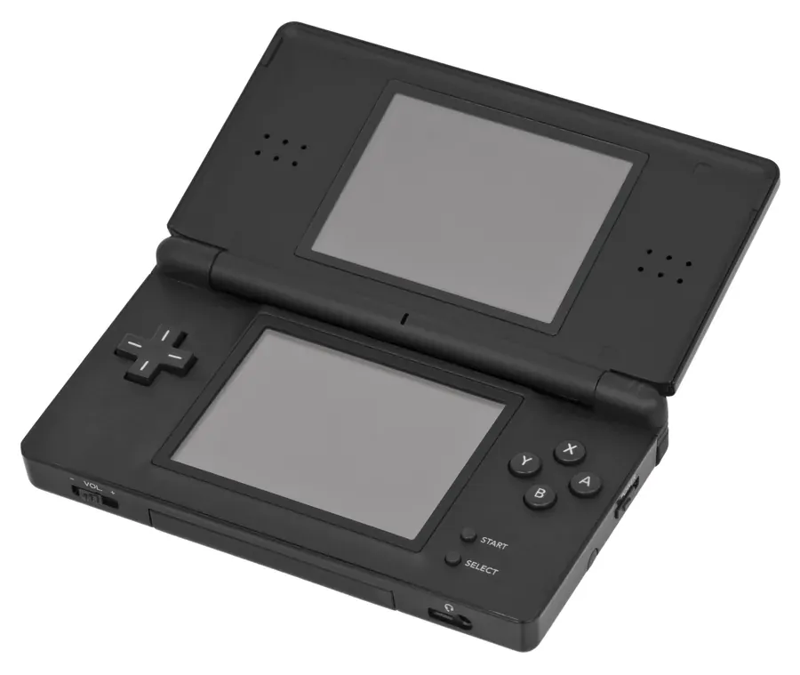
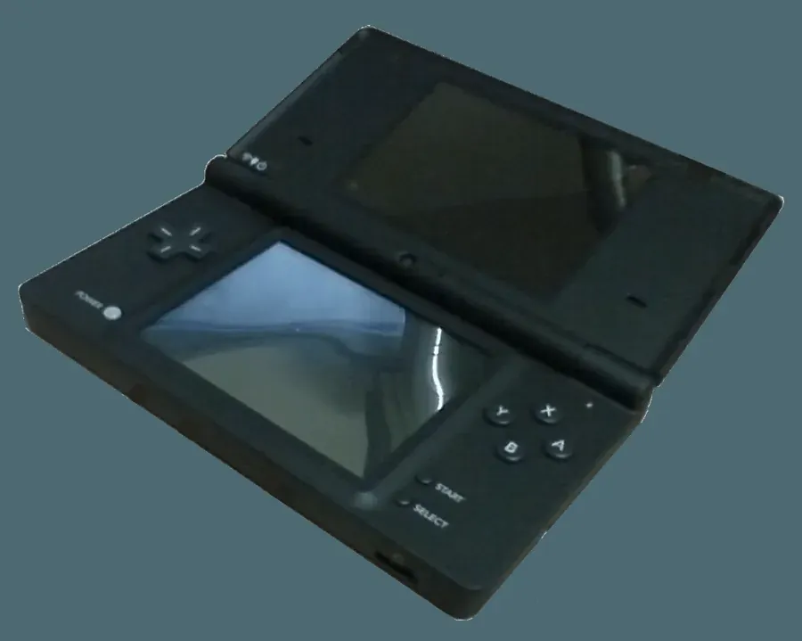
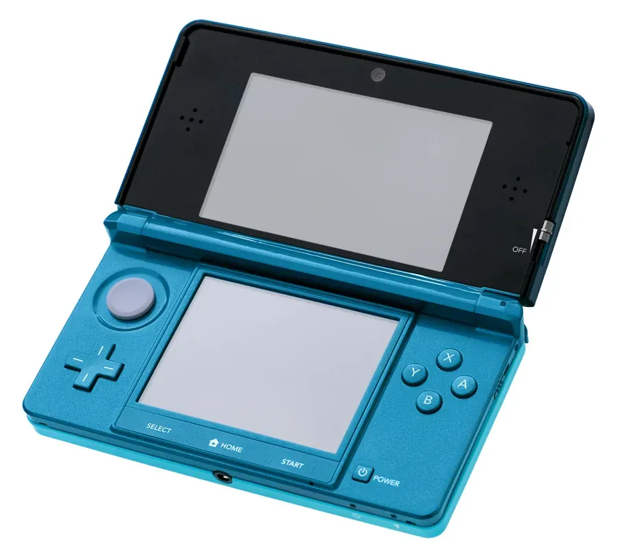
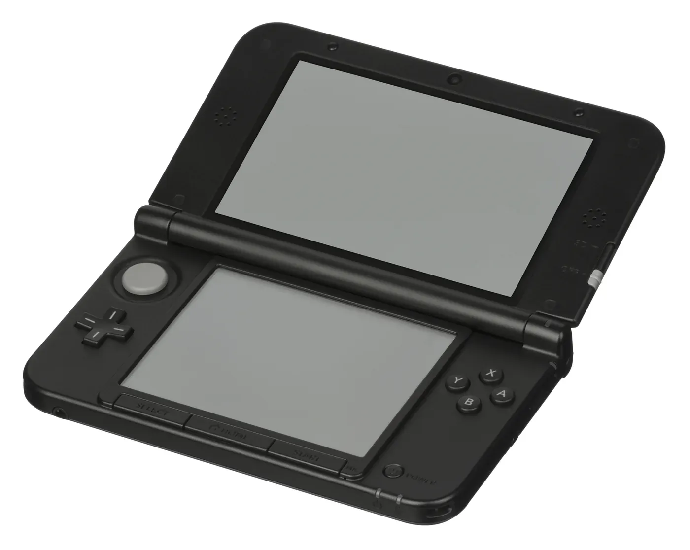
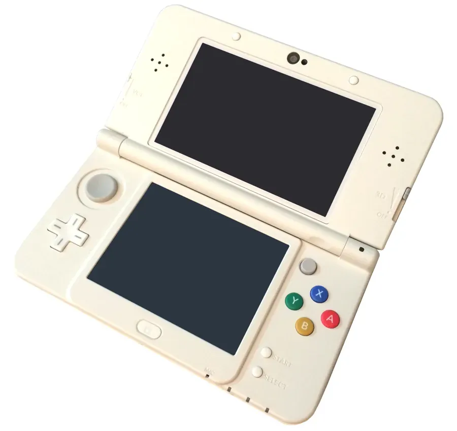
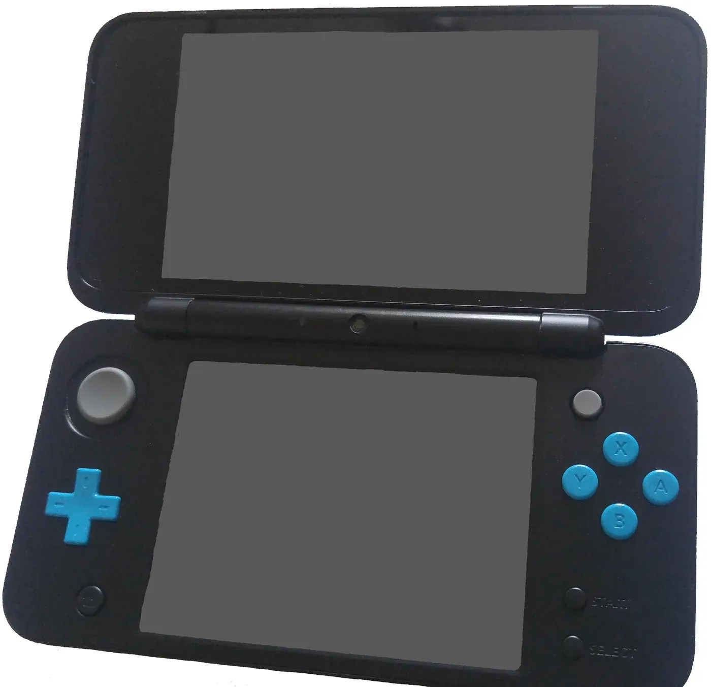

任天堂 Nintendo
1889年创立 · 游戏产业奠基者 · 30款主机
30
主机型号
1.41亿+
Switch销量
48年
主机历史
🏆
现存品牌
关于任天堂
1889年创立于日本京都，从花札纸牌起家。1983年推出FC红白机开创家用机时代，是游戏产业的奠基者之一。代表作：马里奥、塞尔达、宝可梦、动森等。任天堂的哲学是"玩心"——创造任何人都能享受的乐趣。
📺
家用主机
8款
1983


Family Computer (FC)
红白机 · 8位机时代霸主
开创了第三方游戏授权模式，定义了现代游戏产业。经典游戏《超级马里奥兄弟》《魂斗罗》。全球销量6191万台，中国玩家通过小霸王接触。
8位 CPU
卡带介质
6191万台
1990
Super Famicom (SFC)
超级任天堂 · 16位机巅峰
图形与音效大幅提升，RPG黄金时代。《最终幻想VI》《时空之轮》《塞尔达传说：众神的三角力量》。Mode 7模式实现伪3D效果。
16位 CPU
4910万台
Mode 7
1996
Nintendo 64 (N64)
首款摇杆手柄 · 3D游戏革命
《超级马里奥64》定义3D平台游戏，《塞尔达传说：时之笛》被誉为史上最佳游戏之一。卡带介质限制容量，但加载速度为0。
64位 CPU
类比摇杆
3293万台
2001
GameCube (NGC)
紫色方块 · 光盘时代
性能强于PS2但销量不佳。采用miniDVD光盘，容量受限。代表作《阳光马里奥》《塞尔达传说：风之杖》《银河战士Prime》。
Dolphin处理器
miniDVD
2174万台
2006
Wii
体感革命 · 全球爆款
吸引非玩家群体，成为家庭娱乐中心。《Wii Sports》史上最畅销游戏之一（8280万份）。蓝光刻录机计划取消，专注性价比。
体感手柄
家庭娱乐
1.016亿台
2012
Wii U
双屏创新 · 市场失利
GamePad手柄带屏幕，概念超前但营销失败。销量仅1356万台，任天堂最失败主机。但为Switch奠定了双屏+便携的基础。
GamePad双屏
概念超前
1356万台
2017
Nintendo Switch
主机掌机合一 · 革命性设计
可拆卸Joy-Con手柄+底座，自由切换家用/掌机模式。《塞尔达传说：旷野之息》《集合啦！动物森友会》《马里奥赛车8豪华版》。
混合形态
Joy-Con
1.41亿台+
2025
Nintendo Switch 2
次世代掌机 · 新品上市
性能大幅提升，支持4K输出、磁吸式Joy-Con、向下兼容Switch游戏。2025年正式发布，延续Switch的成功基因。
4K输出
向下兼容
2025发布
📱
掌机系列
17款
1980


Game & Watch
便携游戏先驱
横井军平设计，单屏或双屏，每个设备内置一款游戏。奠定了掌机基础形态。2020年推出复刻版《超级马里奥兄弟》。
液晶屏幕
单游戏设备
4340万台
1989
Game Boy (GB)
开创掌机时代
黑白屏幕，续航超强（AA电池×4可用15小时）。《俄罗斯方块》《精灵宝可梦红/绿/蓝》推动销量。
单色LCD
15小时续航
1.18亿台
1996
Game Boy Pocket
轻薄版GB
体积缩小30%，使用2节AAA电池。屏幕对比度提升。
轻薄设计
AAA电池
1998
Game Boy Light
首款背光GB · 仅日本发售
EL蓝绿背光，2节AA电池续航12-20小时。仅在日本发售，是GB系列中较为稀有的型号。
EL背光
日本限定
约150万台
1998
Game Boy Color (GBC)
彩色掌机
首款彩色GB，向下兼容GB游戏。56色同时显示。
56色显示
向下兼容
1.18亿台
2001
Game Boy Advance (GBA)
32位掌机巅峰
横版游戏天堂。《黄金太阳》《火焰纹章》《恶魔城》系列。2003年推出GBA SP（翻盖+背光）。
32位ARM
横版设计
8151万台
2003
Game Boy Advance SP
翻盖背光 · GBA最畅销改版
翻盖设计+前背光屏幕+内置可充电锂电池，解决了初代GBA看不清屏幕的痛点。全球销量4287万台。
翻盖设计
内置电池
4287万台
2004
Nintendo DS
双屏触控 · 销量之王
下屏触摸，创新玩法。《任天狗》《脑锻炼》《精灵宝可梦钻石/珍珠》。2006年推出DS Lite（更轻更亮）。
双屏触控
麦克风
1.54亿台
2005
Game Boy Micro
史上最小GB · 可换面板
仅手掌大小（50×101mm），可更换前面板设计。不兼容GB/GBC游戏，是Game Boy品牌名的最后一款产品。
超迷你
可换面板
约239万台
2006

Nintendo DS Lite
DS系列最畅销 · 更亮更薄
机身缩小40%，屏幕亮度4档可调，续航大幅提升。全球销量9350万台，占NDS系列总销量61%。
4档背光
内置电池
9350万台
2008

Nintendo DSi
双摄像头+DSiWare · 取消GBA兼容
加入双摄像头和DSiWare数字商店，取消GBA兼容。CPU主频提升至133MHz，首次引入区域锁。
双摄像头
DSiWare
4104万台
2011

Nintendo 3DS
裸眼3D掌机
3D效果无需眼镜。《塞尔达传说：时之笛3D》《怪物猎人4》。2014年推出New 3DS（C摇杆+ZL/ZR键）。
裸眼3D
裸眼3D
7594万台
2012

Nintendo 3DS XL
大屏版3DS · 双屏增大90%
上下屏面积均增大90%，续航改善。3DS系列中销量最高的型号，全球2435万台。
大屏4.88寸
裸眼3D
2435万台
2013
Nintendo 2DS
去除3D · 楔形一体 · 入门级
去除裸眼3D的廉价版3DS，楔形一体设计面向儿童和入门玩家。$129.99首发，未在日本发售。
无3D
楔形设计
917万台
2014

New Nintendo 3DS
CPU升级 · 右摇杆 · 面部追踪3D
CPU升级至四核804MHz，新增C-Stick右摇杆和ZL/ZR键。超级稳定3D通过面部追踪自动调整视角，内置NFC支持amiibo。
四核804MHz
C-Stick
1487万台
2017

New Nintendo 2DS XL
3DS家族终章 · 去3D轻量化
3DS家族最后一款，拥有New 3DS XL全部性能但去除3D。重量260g，比New 3DS XL轻76g。3DS时代的收尾之作。
无3D
260g轻量
约800万台
2019
Switch Lite
纯掌机版Switch
价格更低（$199），便携性更强，无法连接电视。一体式设计，Joy-Con不可拆卸。适合纯掌机玩家。
纯掌机
$199
2500万台+